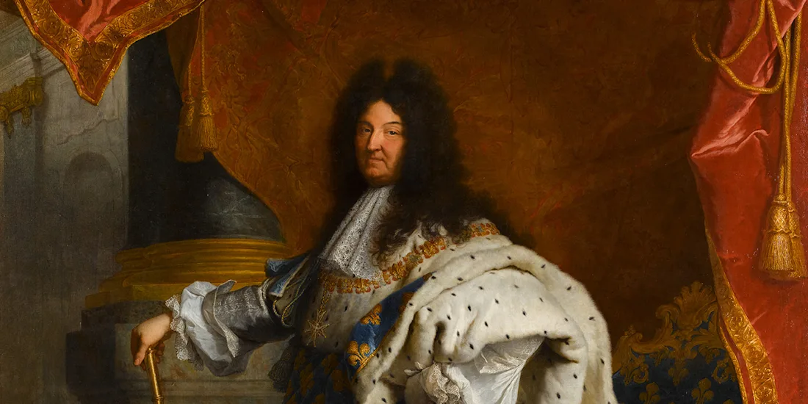
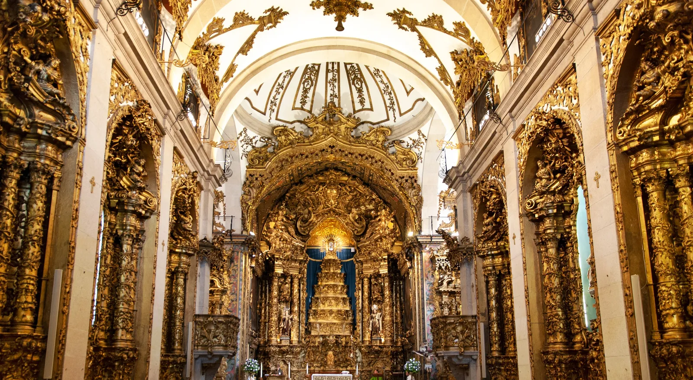
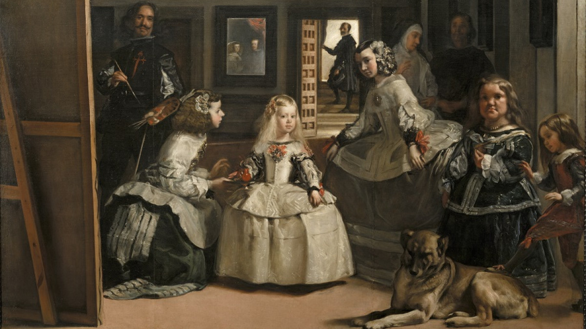

Historical Context
The Baroque period was an era of extreme contrasts in which music, politics and art came together to impress and move society through three main themes:
- Politics and Economy: absolutist monarchs and the high nobility concentrated all power in their hands and used art and grand courtly festivities as a propaganda tool to demonstrate their wealth and superiority.
- Society and Religion: in a Europe in crisis, ravaged by wars and disease and divided between Catholics and Protestants, the Church and the rulers turned public life into a theatrical spectacle to stir the emotions of a population seeking refuge in religion and entertainment.
- Art and Music: both in painting (with chiaroscuro) and in music (with shifts between loud and soft), the main aim was to break with the balance of the Renaissance through movement, excessive ornamentation (horror vacui), surprise and drama, giving rise to major musical genres such as opera.
New musical elements emerged that shaped the development of a new musical style very different from that of the Renaissance:
The new texture: melody and accompaniment
During the Baroque period, traditional polyphony was abandoned because it was considered too complex and confusing for the listener; instead, composers sought music that was clearer and more emotive. To solve this problem, Baroque composers developed the main texture into the melody and accompaniment: a single lead voice takes centre stage (and carries the text) very clearly, whilst the instruments provide a harmonic accompaniment in the background. This marked the birth of the modern concept of "singer + band" that we still use today.
The basso continuo
This is the accompaniment technique used in absolutely all Baroque music. It is the bass and percussion line of the period, the rhythmic and harmonic foundation upon which the main melody rests. It consists of two elements working together:
- A low-pitched instrument that plays the bass line: usually a cello or a bassoon. It plays the lowest notes continuously.
- An instrument capable of playing chords: usually the harpsichord, the organ or the lute. It enriches the sound by playing chords that complement the bass line.
Contrasts
Moving from a forte passage to a piano one, shifting from a soloist to the orchestra taking over… Baroque music is full of contrasts.
Regular pulse
The music pulse now is organized in bars, time signature and accents.
 |
 |
 |
Some notable composers include Johann Sebastian Bach, Georg Friedrich Händel, Claudio Monteverdi and Antonio Vivaldi.
What are we going to learn?
3. Baroque music
3.1 – Religious vocal music
3.2 – Secular vocal music
3.3 – Instrumental music
3.4 – Baroque instruments